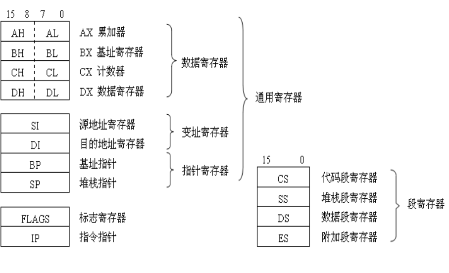
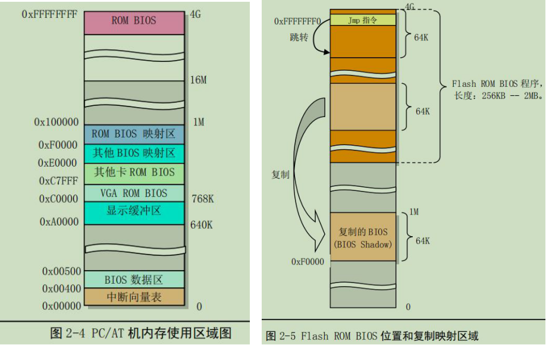

简介
16位CPU寄存器结构 
1. I/O 端口寻址和访问控制方式
在 CPU 和 I/O 适配器之间开始传输数据时，首先需要确定适配器的I/O位置，即端口地址。
端口地址的设置方法一般有两种统一编址和独立编址。
端口统一编址的原理是把 I/O 控制器中的端口地址归入存储器寻址地址空间范围内。因此这种编址方式也成为存储器映像编址。CPU 访问一个端口的操作与访问内存的操作一样，也使用访问内存的指令。
端口独立编址的方法是把 I/O 控制器和控制卡的寻址空间单独作为一个独立的地址空间对待，称为 I/O 地址空间。每个端口有一个 I/O 地址与之对应，并且使用专门的 I/O 指令来访问端口。
2. 主存储器、BIOS 和 CMOS 存储器
典型 PC 机上通常含有三种类型的存储器，一种是用来运行程序和临时保存数据的内存存储器，一种是存放着系统开机诊断和初始化硬件程序的 ROM（BIOS），另一种是用来存放存计算机实时时钟信息和系统硬件配置信息的少量 CMOS 存储器。
启动:
当计算机启动时，CPU会自动设置代码段寄存器CS=0xF000, IP=0xFFF0, 此时CPU代码指向内存中最后一个64KB的最后16字节处，这里正是系统 ROM BIOS存放的位置。并且 BIOS 会在这里存放一条跳转指令 JMP 跳转到 BIOS 代码中 64KB 范围内的某一条指令开始执行。
因此为了能够执行或访问 BIOS 中超过 64KB 范围而又远远不在 0--1M 地址空间中的其他 BIOS 代码
或数据，BIOS 程序会首先使用 32 位访问方式把数据段寄存器的访问范围设置成 4G（而非原来的 64K），
这样 CPU 就可以在 0 到 4G 范围内执行和操作数据。此后，BIOS 在执行了一些列硬件检测和初始化操作
之后，就会把与原来 PC 机兼容的 64KB BIOS 代码和数据复制到内存低端 1M 末端的 64K 处，然后跳转到
这个地方并让 CPU 真正运行在实地址模式下，最后 BIOS 就会从硬盘或其他块设备把操作系统引导程序加载到内存 0x7c00 处，并跳转到这个地方继续执行引导程序。
